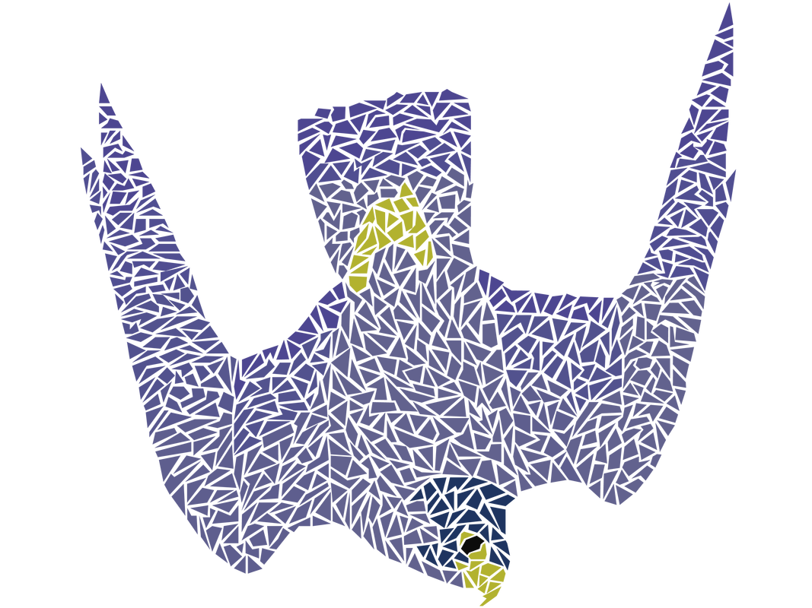
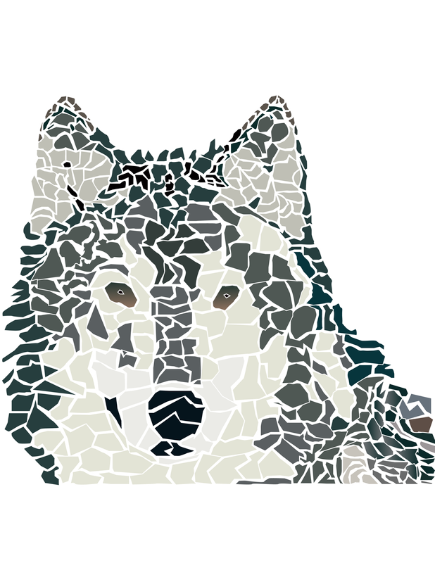
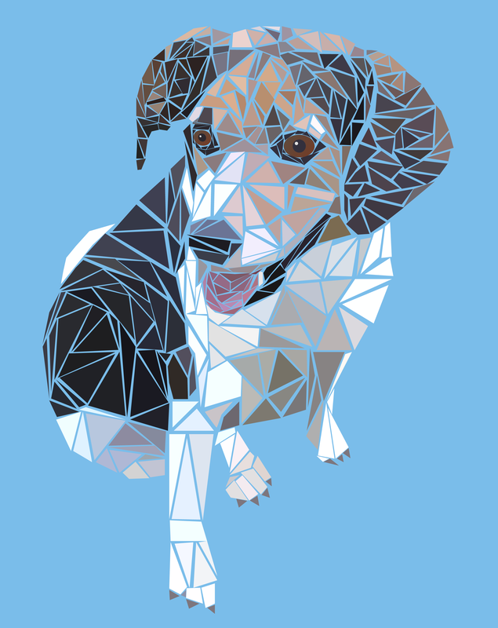
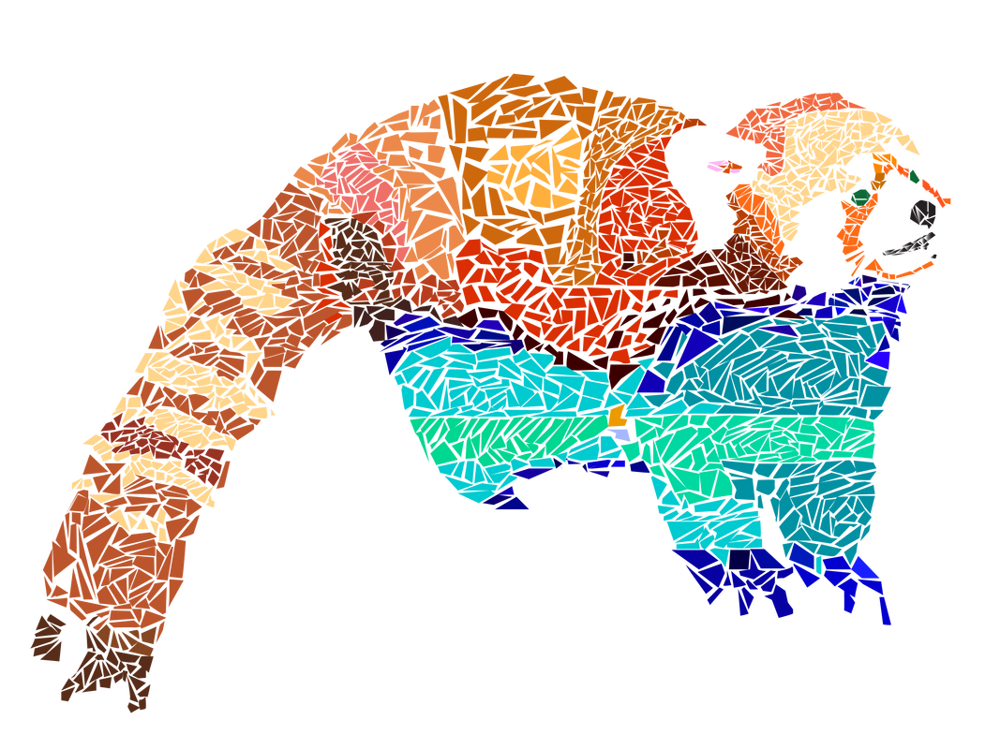
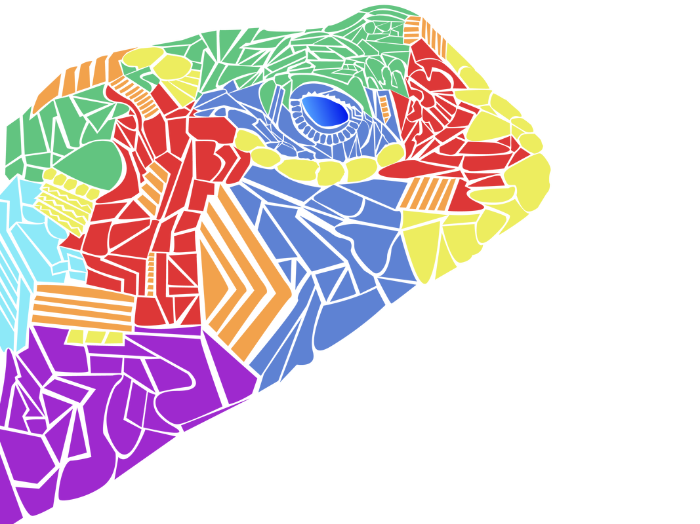
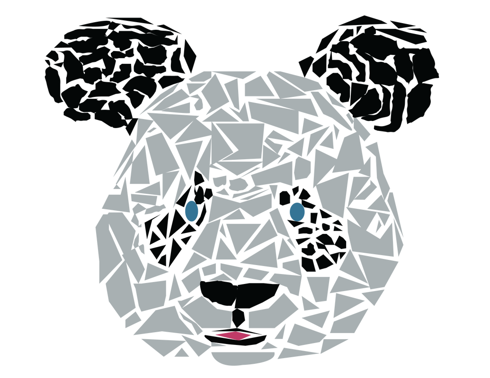

A Polygonal Animal
Directions
Use Gravit's tools, menus, and palettes to create a complex vector image with polygonal shapes.
Assignment
You have been hired as a graphic designer by Idyllwild's Living Free Animal Sanctuary, who have hired you to create a colorful graphic animal theme. You are to follow the directions given by the project manager. Once complete then you should review the checklist for grading criteria before turning in your work.
Create a Colorful Polygonal Animal by selecting an image of animal online and then use polygonal shapes and the pen tool to design a colorful animal shape recreation. Challenge yourself to include gradients or transparency.
Examples






Deliverable Requirements
- Your image is 800 x 600 pixels (2 points).
- Polygonal animal is designed with a creative theme (2 points).
- Design includes various shapes (2 points).
- Design includes text (2 points).
- Design incorporates gradients or transparency (2 points).
- Design incorporates bright decorative color scheme (2 points).
- Animal created is easy to identify (2 points).
- Graphic designed in a manner that is visually pleasing, balanced, and creates an interest in the topic (2 points).
- Graphic file is saved as an SVG file and PNG file, and both files are submitted to onCampus assignments (2 points).
Total: 20 points.